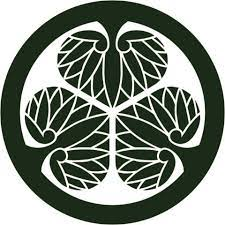

介紹
除了公卿貴族與皇室所代表的政治勢力以外，日本史上另一大勢力就是宗教。古時的寺社不僅代言神佛的權威，在世俗上也支配著廣大領地與經濟，與政治亦牽連頗深。寺院與神社有著許多不同的宗派與信仰體系，同樣有各種代表性的紋章。
真言宗
由弘法大師空海所開創的真言宗，其宗紋是「三巴紋（三つ巴）」與「五三桐」。
「巴紋」的形狀如逗點，其意涵也有水渦、風旋、勾玉或靈魂等種種說法，是一種咒術象徵強烈的傳統紋樣。「三つ巴」在日文裡也引伸為「三強鼎立」的意思。除了真言宗外，「巴紋」也被非常多神社或家系使用，是十分常見的家紋。另一宗紋「五三桐」則是自朝廷拜領。下賜者有醍醐天皇、豐臣秀吉...等不同說法。
天台宗
由傳教大師最澄開創的日本天台宗以「三諦星」為宗紋，代表天台教義的「一心三觀」。
菊輪寶
其總本山比叡山延曆寺（位滋賀縣），寺紋則為象徵佛法的「菊輪寶」。兩個紋樣裡都帶有菊紋，明顯的宣告了朝廷的強力支持。歷代統領延曆寺的「天台座主」有非常多人是出身自皇族的「法親王」，可以想像比叡山在世人眼中的地位是如何崇高。
曹洞宗
曹洞宗由道元禪師從南宋帶回日本，以福井縣永平寺及神奈川縣橫濱的總持寺並列兩大本山。道元出身自村上源氏嫡系的久我家，因此永平寺以久我家的龍胆紋為寺紋。久我家與清和源氏的笹龍胆十分不同的是呈車輪狀設計，稱為「龍胆車」或「久我龍胆」。而總持寺則在後醍醐天皇時獲賜以五七桐紋為寺紋。此二紋即為日本曹洞宗的宗紋。
台北的東和禪寺前身是日治時代的「曹洞宗大本山台北別院」，同時建有日式本殿與閩式禪堂。雖然除鐘樓以外的本殿在1993年拆除，但是現存的禪堂依然延用曹洞宗的兩宗紋，至今仍可在扁額上看到。
日蓮宗
奉妙法蓮華經為最高經典的日蓮宗，於其所屬寺院內經常可以看到「井桁橘」的紋章。開祖日蓮雖然出身貧賤，但據說日蓮所誕生的貫名氏為井伊氏的支系，而井伊氏的家祖則為藤原氏收自橘氏的養子，因此日蓮以「橘紋」加上代表井伊的「井桁」紋為家紋，並為日蓮宗寺院廣為使用。
淨土真宗本願寺派
淨土真宗是日本佛教最大的一股勢力，其中本願寺派過去不但足以和戰國大名抗衡，如今也依然是信徒總數最多的宗派。
本願寺派的宗紋在歷史上變更過多次，亦有很長一段時間使用皇室的菊紋與五七桐。現在的宗紋始自明治時代的第22代法主－大谷光瑞。光瑞之妻籌子出身的藤原氏為藤原嫡系「五攝家」之一的九条家。另外，其妹妹正是大正天皇皇后節子。光瑞結婚後便以九条家的「下り藤」微幅修改，並作為本願寺派的宗紋。
大谷光瑞除了是本願寺法主之外，同時也是探險家、農業研究者，還擔任過中華民國的政府顧問。最近高雄剛修復完成的大谷光瑞在台別莊「逍遙園」，在玄關處就可以看到高懸的下垂藤紋。
稻荷神社
自古以來，稻米就是農耕民族日本最熟悉，也最重要的植物。稻荷神是農耕與五穀之神，稻荷社自然會以稻紋作為神紋啦。
八坂神社
前身為「祇園社」的八坂神社以「木瓜紋」為神紋。這個「木瓜」並不是那個拿來打牛奶或燉排骨的木瓜，而是一種稱為「貼梗海棠」的植物，別名「皺皮木瓜」。同時它也是織田信長最常使用的家紋，相信各位絕不陌生。
雖原因不明，但以祇園社為首，各地以素盞鳴尊／牛頭天王為祭神的神社，都常使用木瓜紋為神紋。織田信長使用木瓜紋，據說與織田氏先祖為奉祀素盞鳴尊的越前劍神社的神官有關。
賀茂神社
京都上賀茂神社及下鴨神社合稱「賀茂神社」。除了兩社神事中會使用葵葉以外，著名的「葵祭」也是因為齋王所搭乘的牛車飾以葵葉而得名，故賀茂神社以「二葉葵」為神紋。
 三葉葵
而著名的德川家紋「三葉葵」，也是因為本姓「松平」的德川家康宣稱松平氏乃賀茂氏後代的緣故。